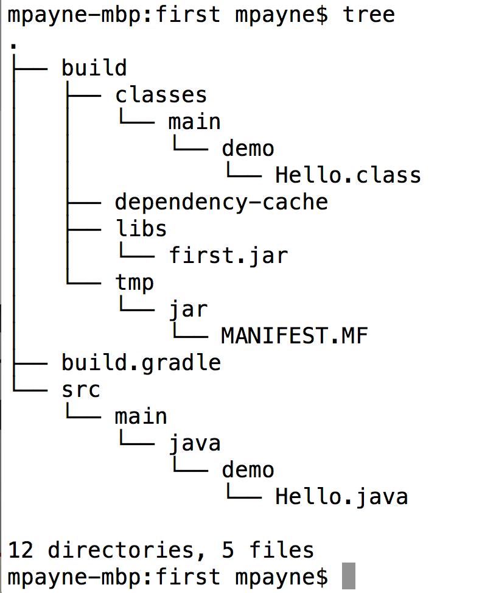

Goldilocks' would use gradle
an introduction to gradle
by Matt Payne
10/15/2013
- These slides are up on GitHub!
- Source for these slides is also on GitHub
- This slide deck started life as a clone of Jeff Sheets' August 2013 talk
- jeffsheets/JavaTesting2013Slides
- Many, many thanks Jeff!
About Me
- Software Engineer at Solutionary
- @MattPayneOrg
- @payne
- Website http://MattPayne.org
- Payne@MattPayne.org
Talk Outline
- 5WH: What, Why, Where, Who, When, and How
- Using and demoing gradle
- From scatch
- Eclipse Plugin
- What about maven and ant?
- Multiproject builds
- Multiple language builds
- Review shortcuts, tips, and tricks
- Maven broken?
- References
- "Everyone in this room is an expert!"
- Jeff Sheets' great observation from 8/20/2013
Please ask questions and make suggestions!
What is gradle?
Why use gradle?
- Gradle manifesto:
- (inspired by Moshe Feldenkrais)
Make the impossible possible, make the possible easy and make the easy elegant.
TAM!
Technology Acceptance Model
Where is gradle being used?
- Put in some stuff about adoption curves
- Add the list of projects and companies that use gradle
Who is who in the gradle zoo?
- TB
- Main Gradle person
- GradleWare.com
When is gradle ready to use?
Now
- Reason 1
- Reason 2
Roadmap
Conferences
How to get started using gradle? From...
- Command line
- Eclipse
- maven
- ant
- multi project
- multi language
Gradle on the command line
- Hello world project
- Turning project into an eclipse project
First gradle: the source
Hello.java
package demo;
/* ... */
public class Hello {
public static void main(String[] args) {
System.out.format("Hello world\n");
}
}
First gradle: the build file
build.gradle
apply plugin: 'java'
First gradle: the session
mkdir -p src/main/java/demo
cat > src/main/java/demo/Hello.java
cat > gradle.build
tree
gradle build
gradle build
gradle --daemon build
gradle build
java -cp build/libs/first.jar demo.Hello
- Let's note the timing differences
- Tip 1: gradle's daemon makes things "faster"
- gradle build does several things
- Compile
- Build jar
- Run tests
- Build test report
That's a lot of files
- gradle clean; find * | wc -l # output 6
- gradle build; find * | wc -l # output 17 
gradle tasks: That's a lot of tasks
Not a lot of gradle
mpayne-mbp:first mpayne$ cat build.gradle
apply plugin: 'java'
mpayne-mbp:first mpayne$
special tasks
Build Setup tasks
- setupBuild - Initializes a new Gradle build. [incubating]
- Generates directory tree and sample build file
- wrapper - Generates Gradle wrapper files. [incubating]
- Generates shell/batch script that downloads gradle for you.
- Wonderful if you continous integration (CI) server does not directly support gradle. Also if you want to share a script with someone who may not have gradle.
- And, there's a gui: gradle --gui
Dependency management: the source
MainDemoBeanUtils.java
package demo;
import org.apache.commons.beanutils.BeanUtils;
/* ... */
public class MainBeanUtilsDemo {
private String jdbcDriverClass, dbUrl, dbUser, dbPassword;
public MainBeanUtilsDemo(String[] args) throws FileNotFoundException,
IOException, IllegalAccessException, InvocationTargetException {
this.strPropertyFileName = args.length > 0 ? args[0] : "jdbc.properties";
Properties properties = new Properties();
properties.load(new FileReader(strPropertyFileName));
BeanUtils.populate(this, properties); // remember the accessors
System.out.format("user=%s password=%s\n", dbUser, dbPassword);
}
}
Dependency management: the build file
build.gradle
apply plugin: 'java'
apply plugin: 'eclipse'
repositories { mavenCentral() }
dependencies {
compile 'commons-beanutils:commons-beanutils:1.8.3'
}
LMGTFY.com
- Just google gradle package or library name for example:gradle commons beanutils
- MVNrepository.com needs ad revenue...
Dependency management: the session
mkdir -p src/main/java/demo # redundant
cat > src/main/java/demo/MainBeanUtilsDemo.java
cat > gradle.build
echo 'org.gradle.daemon=true' > gradle.properties
gradle eclipse # So we can import this into eclipse and fix it up a bit.
gradle build # Don't need the --daemon now
- Tip 2: Use gradle.properties to always use the daemon
- gradle's daemon makes things "faster"
- ps -ef | egrep -i 'gradle'
- User Guide Chapter 20: The Build Environment
Using gradle's eclipse plugin
- add "apply plugin: 'eclipse'" to your build.gradle
- gradle eclipse
- In eclipse, import existing eclipse project
- joy
Next, Using eclipse's gradle plugin
Using eclipse's gradle plugin
- Gradle tooling
- Gradle Integration for Eclipse
- I did not install the Spring Dashboard
- github.com/spring-projects/eclipse-integration-gradle/
-

Dependency management: Running
- Let's use gradle to run our code
- Folks manage the classpath like this with ant and maven too...
defaultTasks 'BeanDemo'
apply plugin: 'java'
apply plugin: 'eclipse'
repositories { mavenCentral() }
dependencies {
compile 'commons-beanutils:commons-beanutils:1.8.3'
}
task BeanDemo(type: JavaExec) {
main='demo.MainBeanUtilsDemo'
classpath=runtimeClasspath
}
- gradle BeanDemo
- gradle BD
- Tip 3: The CamelCaseShortCut (CCSC)
Converting a maven project
Let's convert a simple mvn project to gradle. For example
kohsuke/github-api
- git clone https://github.com/kohsuke/github-api.git
- cd github-api
- gradle setupBuild
- vim pom.xml # Remove parent & move groupID to top
- less build.gradle
Reusing ant goals
Traditional JUnit
CarRepositoryIT.java
//Setup your Eclipse Favorites for code suggestions
import static org.junit.Assert.assertEquals;
/* ... */
assertEquals(2013, result.getYear().intValue());
assertEquals("JunitMotors", result.getMake().getName());
assertEquals(make.getId(), result.getMake().getId());
assertEquals(car.getDescription(), result.getDescription());
Good things to know
- Build life cycle
- Task api
- The DSL is on top of groovy. So, all of groovy is there
- Groovy can be a lot like java
Build Life Cycle
- Initialization
- Configuration
- Execution
Task API
- build.gradle is a program
- tasks are objects
Gradle DSL
- Gradle DSL Reference
- a simple groovy example
- simple example java like
Review shortcuts, tips, and tricks
- Tip 1: daemon
- Tip 2: gradle.properties
- always turn the daemon on
- Tip 3: The CamelCaseShortCut (CCSC)
- Tip 4: default task
- apply from http
- common settings for projects on your whole team
- github.com/spring-projects/eclipse-integration-gradle/
- --parallel option runs unit tests in parallel
Maven broken?
- Some people think so
- Maven broken by design
- 9/26/2013
- This is why Goldilocks would use gradle
- Is gradle perfect? Of course not!